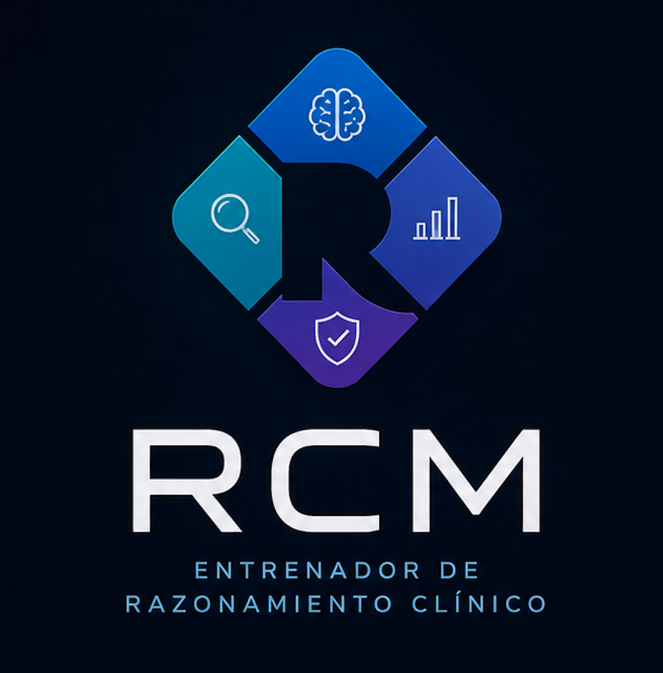

El Dr. Cálculo te corrige

La seguridad del paciente comienza en tu forma de pensar.
Entrena el razonamiento detrás del cálculo, no la fórmula de memoria. ¿Cómo entras hoy?
Diseño universal · funciona con lector de pantalla · ajusta texto y contraste arriba a la derecha
Cada carrera entrena las habilidades que necesita en la práctica.
Debe terminar en ust.cl — así confirmamos que eres estudiante y guardamos tu avance.
Sin calculadora. Razona cada paso.
RCM analizó tu razonamiento
Hoy entrenaste una habilidad.
No memorizaste una fórmula.
Accede al tablero de tu curso y al generador de ejercicios.
Quién practicó y —lo importante— en qué tipo de error, para saber qué reforzar en clase.
| Estudiante | Tema | Dominio | Error más común |
|---|
Arma un caso sin programar: completa los campos y la app lo convierte en ejercicio.
Aún no has creado casos en esta sesión.
Simulación de cómo funcionaría. La versión real usa un servidor con IA.
El Dr. Cálculo te corrige